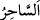
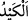
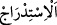
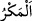

69. Sağ elindekini at da, onların yaptıklarını yutsun. Yaptıkları, sadece bir büyücü
hilesidir. Büyücü ise, nereye varsa (ne yapsa) iflah olmaz.”
“Sağ elindekini” asânı “at da, onların yaptıklarını yutsun.” Yâni asâ, sana yürüyor
ve hareket ediyor gibi görünen, onların iplerden ve sopalardan yaptıkları sihirlerini
yutar.
“Sağ elindekini” ifâdesindeki kapalılık, Mûsâ (a.s.)’ın şânını yüceltmek ve asânın
bilinen asâlardan olmadığını bildirmektir. Çünkü o, sıra dışı sonuçların hâsıl olmasına
sebep olmaktadır.
Sihirbazların ortaya koydukları sihirden “onların yaptıkları” diye bahsedilmesi, bunu
küçümsemek, yaptıklarının uydurma ve düzmece olduğunu bildirmek içindir. Yani onlar,
yalan söylediler ve onu uydurdular.
“Yaptıkları” başka bir şey değil “sadece bir büyücü hilesidir.” Sihirbazın tuzağı,
hilesi ve eşyayı olduğundan başka göstermesi cinsinden bir şeydir. “
(büyücü)”
kelimesinin nekre oluşu hakaret içindir. “
” hile çeşitlerinden birisidir. Bunun
övüleni de yerileni de vardır. Ancak genellikle kötü mânâda kullanılır. “
” ve “
” kelimeleri de böyledir.
“Büyücü ise nereye varsa” ne yapsa “iflah olmaz.” Yeryüzünde nereye giderse gitsin
orada sihirbazlık yapmakla istediğini elde edemez.
et-Te’vîlâtü-n-Necmiyye’de şöyle der: “Âyet işâret etmektedir ki senin sağ elindeki
benim san‘atım ve benim hilemdir. Sihirbazların yaptıkları ise onların san‘atları ve
hileleridir. Sihirbaz da, yaptıkları hîlelelerde benim yaptıklarımın ve hilemin olduğu
yerde asla iflâh olmaz. “Doğrusu benim tuzağım sağlamdır.” (el-Kalem, 68/45)”
Bilesin ki dünyevî felâh (kurtuluş), dünya hayatını güzelleştiren mutluluklar
kazanmaktır. Bunlar da uzun ömür (bakâ), zenginlik ve şeref sahibi olmaktır. Uhrevî
felâh ise şu dört şeyle olur: Fenâsı olmayan bakâ (ebedî hayat), fakirliği olmayan
zenginlik, zilleti olmayan izzet ve cehâleti olmayan ilim. Şu halde dünya ehlinin
kurtuluşu/felâhı, gerçek felâh değildir. Çünkü sonu kayıptır, hüsrandır. Bilmez misin ki,
üstazına ‘Hayır’ diyen, yâni îtiraz eden kimse aslâ iflah olmaz. Biz üstazına itiraz eden
nicelerini gördük. Kendileri mal, mevki ve riyâset sâhibi idiler. Ancak böylelerinin
sonu hep hüsran olmuştur. Münker fiiller işleyen diğer muhalifleri de bunlara kıyas et.
Nisâbü’l-ihtisâb’da şöyle der: “Sihirbaz, cezâlandırılmadan önce tevbe ederse
tevbesi kabûl olunur. Ancak cezâlandırıldıktan sonra tevbe ederse bu takdirde tevbesi
kabul olunmaz.”
Şeyh Ekmel’in Şerhu’l-meşârık’ında şöyle der: “Muhammed b. Şücâ, Hasan b.
Ziyâd’dan o da Ebû Hanîfe (r.h.)’dan rivâyet ettiğine göre o şöyle demiştir: “Bir kişinin
sihirbaz olduğu anlaşılınca katl edilir ve tevbe etmeye dâvet edilmez. Onun “Ben sihri
bırakacağım, tevbe edeceğim” demesine de îtibar edilmez. Sihirbaz olduğunu îtiraf
ederse, kanını akıtmak helâl olur. İki kişi onun sihirbazlık yaptığına şâhidlik eder ve
kendisinin bu sıfatı taşıdığını söylerse, bu takdirde de öldürülür ve tevbe etmeye dâvet